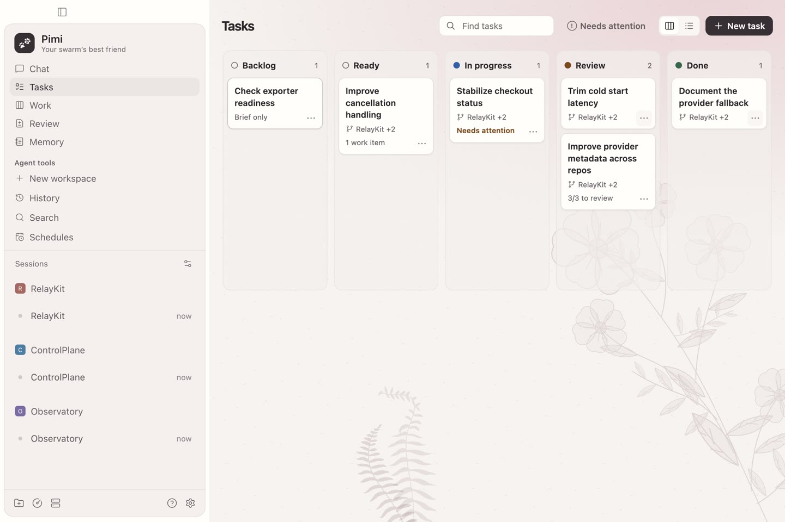

Track a swarm
Ask an agent in chat to attach repositories, link worktrees, or update a saved task. Follow its progress on the board.
macOS preview
Run coding agents in parallel, follow their work across repositories, and review their changes side by side.

Ask an agent in chat to attach repositories, link worktrees, or update a saved task. Follow its progress on the board.
Compare worktree diffs side by side, inspect source, and walk through changed files.
Fork a conversation into another configured provider and bring the selected chat history along.
Open the disk image, drag Pimi into Applications, and open it from there. The app bundles its local daemon. Set up an agent provider during onboarding.
This preview is ad-hoc signed and has not been notarized by Apple. macOS may show a security warning on first launch. Apple’s guidance on downloaded apps